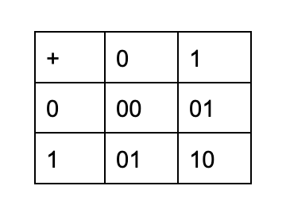
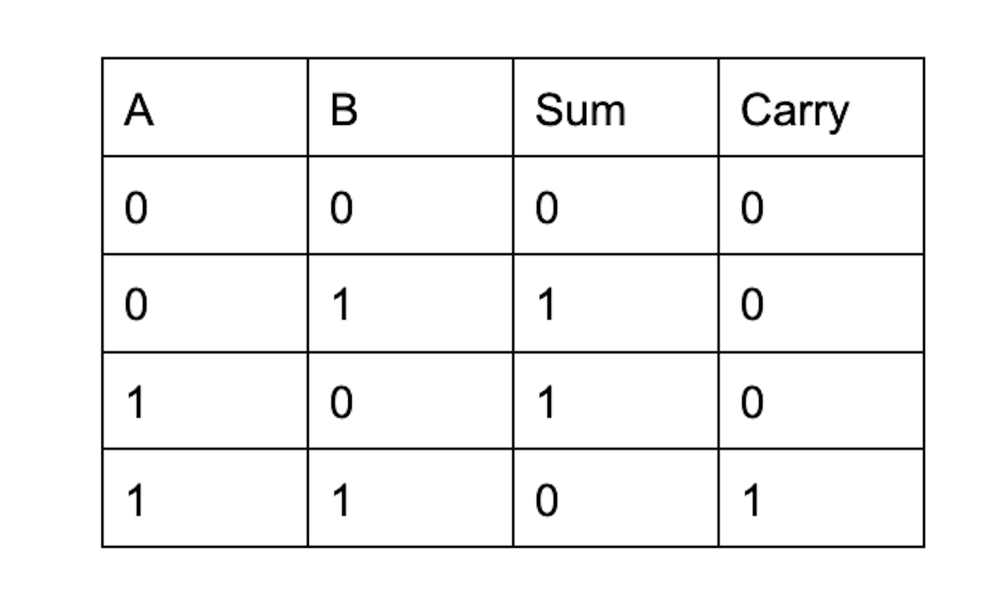
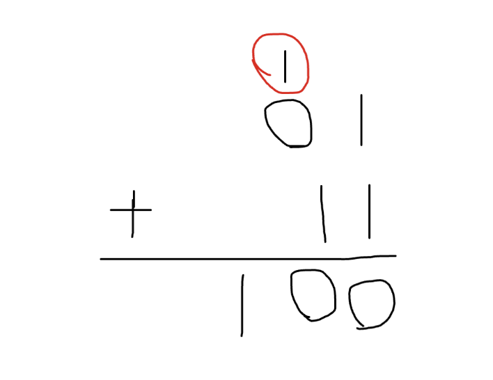
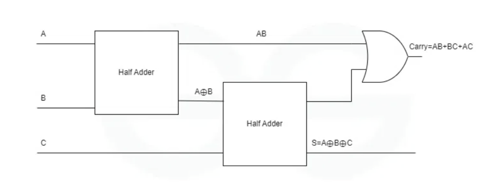
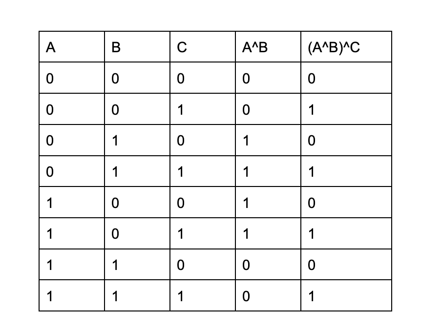

A Logical Deep Dive
Introduction
Computers need to add numbers, and since they can only work with bits, computer engineers constructed hardware to add bits.
The most rudimentary of these is the half-adder, which takes in two values, a and b. The output is a sum and a carry. The results can be summarized in these output tables.
These are the results for adding two bits in binary. The least significant bit is considered the sum while the most significant bit is considered the carry.
As you may have noticed, the operation for sum is XOR, since if the bits are the same the sum is zero while if the bits are different, the sum is one. The carry bit is also AND, since it is only true if both bits are one.
The Challenge
Now, the problem with this is that in large additions, we will often need three inputs, since we are carrying bits from previous additions.
As shown here, the second addition (0 plus 1 with a 1 being carried in) the answer is a sum of zero and a carry of one.
To do this, the full adder was created out of two half adders and an XOR.
When I was taught this in Computer Architecture class, I was made aware that this worked, but I was curious as to why it worked.
So, I dove into the theory behind the two results and tried to explain why each of them was logical.
The sum bit is xor(C, xor (A, B))
Take a second to think about why: it’s the sum output (meaning XOR) of the second half adder, and those two inputs are C (the carry bit) and the sum output (meaning XOR) of the first half adder, which takes A and B as inputs.
Converting this to an equation, the sum is equal to (A ^ B) ^ C.
Let’s think about this again in terms of outputs.
If there are an odd number of 1 bits overall, (either 1 or 3), the resulting answer is either 01 or 11, meaning the sum is 1. If there are an even number of 1 bits (either 0 or 2), the answer is either 00 or 10, meaning the sum is zero.
Looking at the XOR values means that
1. If A and B are the same and C is 1, there are an odd number of 1 bits.
2. If A and B are the same and C is 0, there is an even number of 1 bits.
3. If A and B are different and C is 1, there are an even number of 1 bits.
4. If A and B are different and C is 1, there are an odd number of 1 bits.
But what about the carry?
Tracing through the steps of the full adder, the carry is xor(and(xor(A, B), C), and(A, B)).
Expanding that,
((A ^ B) & C) ^ (A & B).
Let’s break this down into two scenarios in which we have a carry bit:
First, (A & B) or the right side of the equation. There is a carry if both A and B are one, since the final result is now either 10 or 11 depending on C.
Second, ((A ^ B) & C). What this means is that there will be a carry if C is 1 and either A or B is 1. This breaks down into the two scenarios A & C and B & C, and you can see that if either one of those are true, we need a carry bit.
Conclusion
So there you have it, a way to intuitively make sense of not just how the full adder works, but in theory why it should work based on bitwise operations.
Thank you for reading, and if you have any ideas as to how to break this down better, let me know. I’m always trying to learn more.